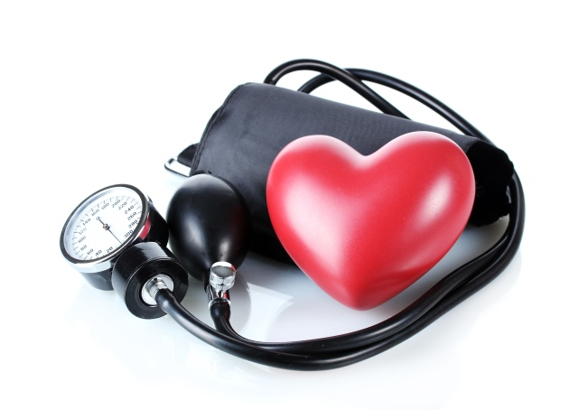
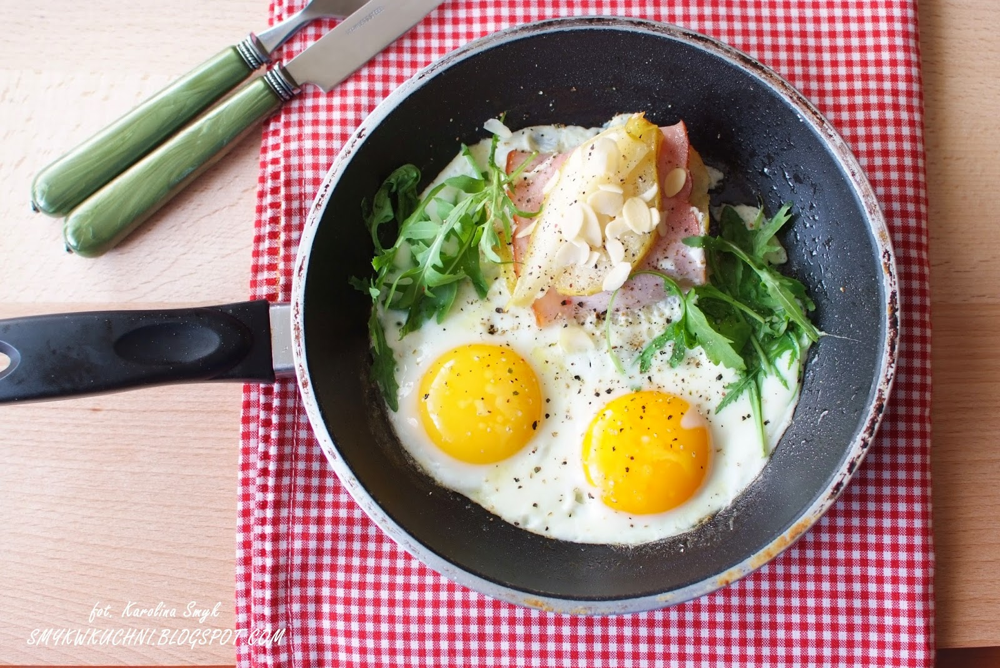
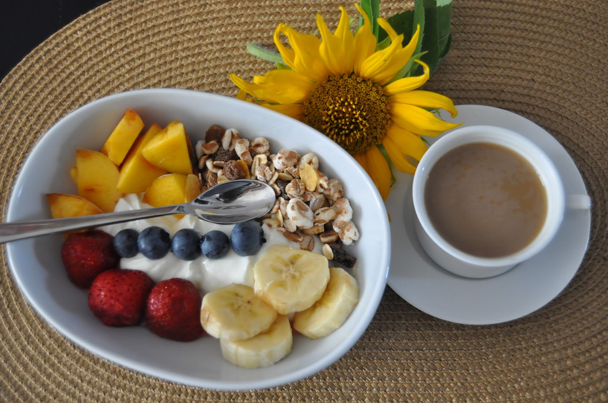
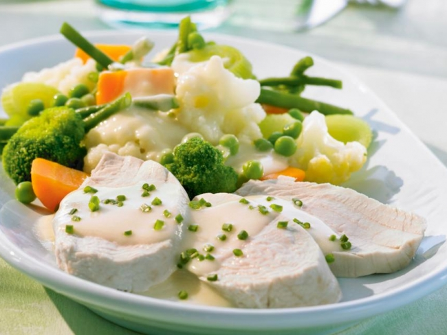
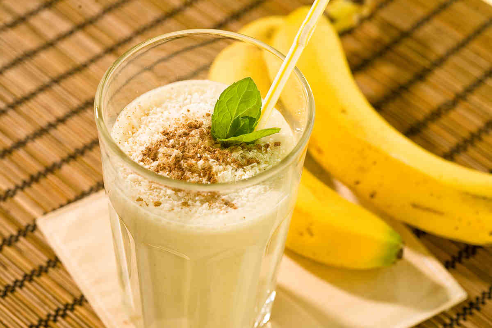

Nie tylko kobiety dbają o swoją sylwetkę oraz stosują diety odchudzające, ale coraz częściej mężczyźni, gdyż w obecnych czasach zdrowy i atrakcyjny wygląd odgrywa ważną rolę zarówno w życiu zawodowym, jak i prywatnym. Aby prowadzić zdrowy styl życia, wystarczy kilka drobnych zmian w codziennym jadłospisie. Dieta dla mężczyzn nie musi być ani drastyczna, ani monotonna, a właściwe odżywianie pomoże panom uzyskać atrakcyjną sylwetkę i zadbać o zdrowie. Jak więc powinna wyglądać kuracja odchudzająca dla mężczyzn?
Zasady diety dla mężczyzn
Skutki nieprawidłowej diety
Jadłospis dla mężczyzn
Zasady diety dla mężczyzn
Sama aktywność fizyczna nie wystarczy, by prowadzić zdrowy styl życia. Na początek warto stopniowo zmienić swoje nawyki żywieniowe. Przede wszystkim panowie muszą przyzwyczaić organizm do spożywania mniejszych porcji posiłków, ale częściej – 4-5 razy dziennie. Przygotowując śniadania, należy zamienić tłuste wędliny (boczek, baleron, pasztety) na lżejsze: wędliny drobiowe lub produkty rybne, ser żółty zastąpić białym, a bułki kajzerki pieczywem razowym lub grahamem. Dobra dieta jest bogata w warzywa i owoce, które powinny być obecne w każdym posiłku. Do kanapki można dorzucić plasterek ogórka lub pomidora. Warto również nauczyć się jeść sałatki. Są one nie tylko zdrowe, ale i bardzo smaczne. Zdrowa dieta pozwala na podjadanie pomiędzy posiłkami właśnie warzyw. Surowa marchewka będzie doskonałą przegryzką. Ponadto pamiętajmy, że warzywa są nie tylko małokaloryczne, ale zawierają mnóstwo witamin i błonnik, który reguluje pracę jelit, zmniejsza uczucie głodu i przyczynia się do rozwoju flory bakteryjnej w jelitach. Ilość błonnika w codziennej diecie można zwiększyć poprzez dodawanie do potraw otrębów, ziaren słonecznika, orzechów czy musli. Świetnym pomysłem jest również samodzielne komponowanie mieszanki na śniadanie – łączenie ulubionych płatków, rodzynek, suszonej żurawiny czy świeżych owoców.
Dla mężczyzn walczących z nadwagą dobra może się okazać jednodniowa głodówka. Głodówka lub dieta płynna umożliwi detoksykację i skuteczne rozpoczęcie programu odchudzania. Dieta detox zakłada przyjmowanie wyłącznie produktów płynnych, bulionów, soków i koktajli. Można przygotować wywar warzywny z 2 marchewek, 3 pietruszek, 3 cebul, selera, 2 porów oraz 1 kg ziemniaków gotowanych w łupinach. Taki wywar przyspiesza pracę jelit i ułatwia trawienie.
Skutki nieprawidłowej diety

Mężczyźni szczególnie narażeni są na choroby związane z nadwagą i otyłością. Choroby układu krążenia (miażdżyca, nadciśnienie, choroba niedokrwienna serca) stanowią główną przyczynę śmierci wśród mężczyzn. Podczas wzmożonego wysiłku fizycznego w organizmie powstaje wiele wolnych rodników, które - jeśli nie zostaną odpowiednio szybko zneutralizowane przez antyoksydanty - mogą stać się przyczyną wielu chorób, w tym nowotworowych. Dlatego dieta panów powinna być obfita w takie substancje, jak - polifenole, flawonoidy - znajdujące się w warzywach, owocach oraz zielonej herbacie. Ponadto badania dowodzą, że rak prostaty, nowotwory jelit częściej występują u osób otyłych niż szczupłych. Otyli mężczyźni mają częściej problemy z potencją oraz są bezpłodni. Zwiększona masa ciała jest również przyczyną zwyrodnień układu kostnego (zwyrodnienia stawów, kręgosłupa) oraz może prowadzić do niewydolności nerek i wątroby.
Niezdrowe odżywianie mężczyzn znajduje swoje odbicie w badaniach. TBS OBOP dowodzi, że otyłość w Polsce to głównie problem panów, nie kobiet. Wśród osób w wieku 15-49 lat, 10% więcej mężczyzn niż kobiet ma nadwagę.
Jadłospis dla mężczyzn

Śniadanie – powinno zawierać produkt bogatobiałkowy najlepiej pochodzenia zwierzęcego, np. jaja, chude wędliny, ser biały, mleko, jogurty. Źródło węglowodanów powinno stanowić pieczywo pełnoziarniste lub płatki zbożowe w postaci musli. Z kolei warzywa można spożywać w postaci sałatek lub surówek. Do tego kawa, zielona herbata, szklanka soku grejpfrutowego lub kakao.

II śniadanie – powinno być lekkie, a zarazem pożywne. świetny bedzie jogurt z musli lub sałatka owocowa (banan, mandarynka, truskawki, winogrona), a do tego kromka pieczywa chrupkiego. Wskazane jest również spożywanie ryżu z owocami, a do tego kawa bez cukru, owocowa herbata lub sok.

Obiad – aby zachować szczupłą sylwetkę, należy zminimalizować zawartość tłuszczu. W tym celu tłuste i wysokokaloryczne mięso warto zastępować chudym drobiowym lub rybami. Z kolei zupy i sosy zagęszczać mąką, a nie zasmażką. Dobry obiad dla mężczyzny to talerz zupy pomidorowej, pulpety z wołowiny, kasza gryczana i surówka z cykorii; krupnik, schab z jabłkiem z ziemniakami i kapustą kwaszoną; rosół, kotlet z fileta kurczaka z ryżem i surówką z kapusty pekińskiej, a do tego szklanka kompotu.

Podwieczorek – o tej porze odpowiednim daniem będzie koktajl z jogurtu i owoców, kanapka z pumpernikla z dżemem śliwkowym, surówka z pomidorów i cebuli.
 Kolacja – nie powinno się jej jeść zbyt późno ani zbyt dużo. Dobry będzie omlet ze szczypiorkiem i szynką, wędzona makrela lub surówka z sałaty, pomidora, ogórka i cebuli, a do tego zielona herbata.
Kolacja – nie powinno się jej jeść zbyt późno ani zbyt dużo. Dobry będzie omlet ze szczypiorkiem i szynką, wędzona makrela lub surówka z sałaty, pomidora, ogórka i cebuli, a do tego zielona herbata.
Dla aktywnych mężczyzn optymalna dieta powinna zawierać warzywa w każdym daniu, natomiast owoce lub batoniki typu crunchy należy spożywać na drugie śniadanie lub podwieczorek. Nie powinno się podjadać pomiędzy posiłkami. Polączenie takiej diety z aktywnością fizyczną na co dzień – basen, bieganie, siłownia, długie spacery - sprawi, że będziemy mieć pewność, że nasze zdrowie jest pod kontrolą, a waga nie będzie ulegała gwałtownym wahaniom.